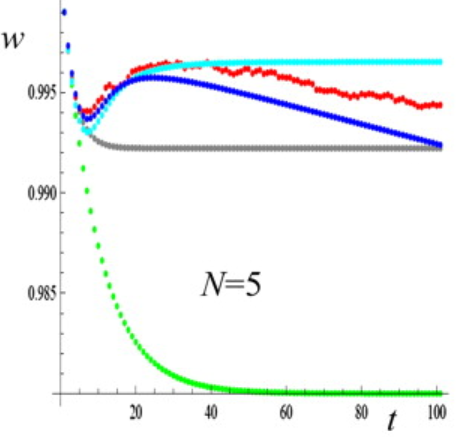
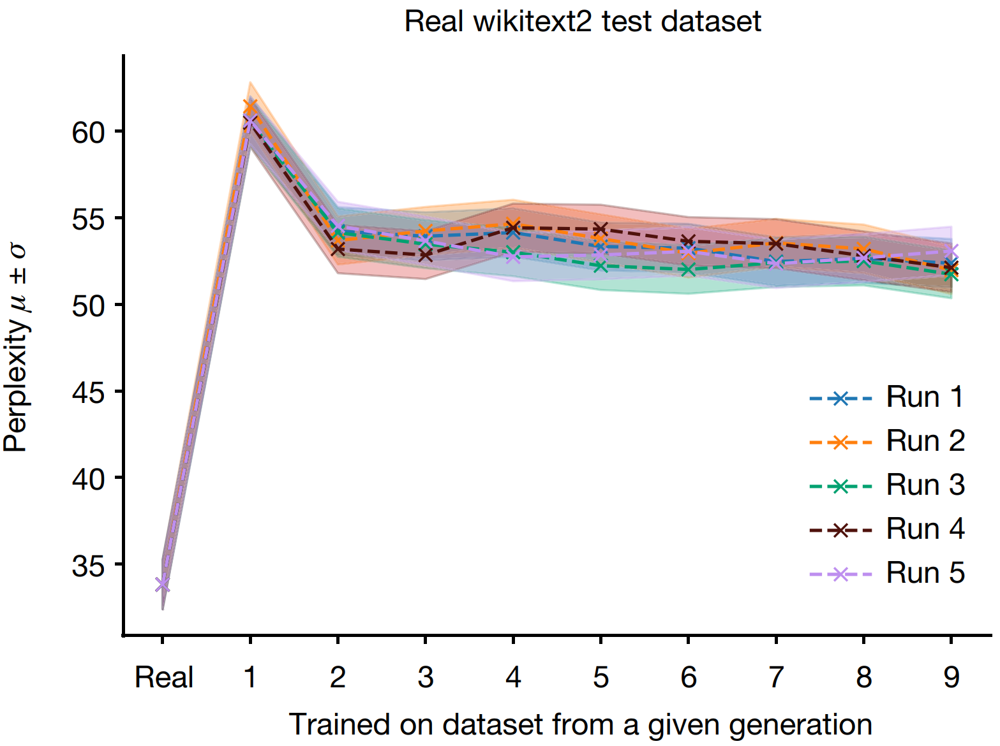

Exploring Parallels Between Genetic Diversity and Model Collapse
#data #LLM #commentary
The fields of genetics and artificial intelligence (AI) might seem worlds apart, but a closer examination reveals surprising parallels, particularly in the context of generative AI models. Just as biological systems evolve and adapt through genetic diversity, AI models "evolve" through iterative training processes. However, both systems face significant risks when diversity is compromised, leading to potential collapse. This post explores these analogies, leveraging real-world data and research to illustrate how concepts from genetics can enhance our understanding of AI, especially in preventing model collapse.
DNA vs. Training Data: The Foundations of Life and AI
In biology, DNA serves as the blueprint for all living organisms, encoding the instructions needed to build and sustain life, including traits, behaviors, and adaptability. Genetic mutations introduce variation within a population, which is essential for evolution. While some mutations can be harmful, others lead to beneficial adaptations that improve a species' chances of survival.
Similarly, in generative AI, training data acts as the blueprint for the model, guiding its output generation, predictions, and adaptability to new inputs. Variations introduced during iterations and model updates can either enhance the model's performance or result in novel outputs. However, the quality of this "genetic material"—the data—is crucial. Just as harmful mutations in DNA can lead to genetic disorders, poor-quality data can cause AI models to develop errors or biases, with potentially significant consequences.
Both DNA and training data are foundational yet susceptible to flaws. Just as mutations in DNA can result in genetic disorders, AI models can "mutate" in ways that introduce errors or biases, especially if trained on flawed data. This parallel underscores the importance of continuous monitoring and validation of AI models to ensure their "evolution" leads to positive outcomes. It also highlights the critical need for carefully curated, diverse training data in AI development.
Inheritance and Iteration: The Risk of Model Collapse
In genetics, traits are passed down through generations, allowing for the accumulation of beneficial adaptations. However, this process also carries the risk of inheriting harmful mutations. In small or isolated populations, this can lead to inbreeding, where a lack of genetic diversity results in an accumulation of defects. Without the purging effect of natural selection, these harmful mutations can accumulate, leading to a decline in population fitness.
A similar risk exists in generative AI. When models are repeatedly trained on the outputs of other models or a narrow set of data, they can experience a form of "inbreeding," where the lack of diversity in training data leads to increasingly repetitive, biased, or flawed outputs. This phenomenon, known as model collapse, can significantly diminish the effectiveness of AI systems, making them less robust, more biased, and less adaptable to new and diverse inputs.
To illustrate this, we can compare the impact of inbreeding over multiple generations to findings from a recent paper published in Nature on generative AI. In genetics, inbreeding reduces genetic diversity, leading to a higher incidence of genetic disorders and reduced adaptability. Similarly, the Nature study shows that repeated training on model-generated data leads to degraded performance and a narrowing of the model's output diversity. We'll compare population mean fitness in genetics to perplexity in AI to further explore this analogy.
Fitness versus Perplexity
Population Mean Fitness measures the average reproductive success of a population. It is influenced by genetic diversity, mutation, and selection. High fitness indicates a healthy, diverse population well-adapted to its environment, while low fitness suggests inbreeding depression, accumulation of harmful mutations, or loss of genetic diversity.
Perplexity is a metric used to evaluate language models, reflecting how well a model predicts a sample. It is inversely related to the model's predictive confidence. Low perplexity indicates that the model is confident and accurate in its predictions, typically associated with a well-trained, diverse model. High perplexity suggests the model struggles to make accurate predictions, which can occur if the model is overfitted, undertrained, or lacks diversity in its training data.
This graph, reproduced from a publication by Garcia-Dorado et al., illustrates the decline in population fitness (y-axis) as a function of generation (x-axis) in a population experiencing inbreeding. The data shows a sharp reduction in fitness over the first few generations. The green line represents a scenario with no natural selection to purge deleterious effects, while other series depict various models of natural selection.
This graph, reproduced from the Nature paper, shows the increase in perplexity (y-axis) as a function of generation (x-axis) in an AI model with high levels of "inbreeding" data. The results demonstrate how repeated training on model-generated data leads to increased perplexity, indicating a decline in the model's performance and output diversity.
Although fitness and perplexity correlate oppositely with diversity in their respective fields, the analogous graphs in genetics and AI show a similar trend. In both cases, the presence of a mechanism akin to "natural selection" helps mitigate the adverse effects of reduced diversity.
Learning from Nature to Build Better AI
The analogy between genetics and generative AI emphasizes the need for robust metrics to monitor model collapse and identify underlying issues that could accumulate over time. Just as natural selection in biology works to eliminate harmful mutations, model optimization in AI aims to refine performance, though it may not always address deeper flaws.
By recognizing these parallels, we can devise strategies to prevent model collapse and enhance the resilience of AI systems. Prioritizing diverse and representative training data, coupled with careful iteration, is crucial for maintaining the robustness and fairness of AI models. Additionally, exploring new techniques that mirror evolutionary processes can ensure that AI systems continue to evolve in innovative and positive directions.
Incorporating these insights will not only improve the quality of AI systems but also contribute to building models that are both equitable and sustainable in the long term.